2013/1110Sun屋上で倒れたのは誰 。516回目
劇場版BAD BOYS J
ー最後に守るものー
ついに全国上映されました！
乃木坂46として
銀幕デビューの作品になります。
どきどき。
ぜひ観てください！
よろしくお願いします！
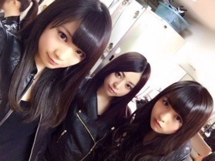
ナイツレディーーーース！
昨日は
ナタリーさんの撮影がありました！
バック8企画第二弾です。
また撮影できたと思うと嬉しいなあ
動き回ったり遊んだり楽しかった！
夕食にカルボナーラを
一気に食べてしまって
撮影時、胃がもたれてしまい、
お腹を押さえながら
今、ここ(胃)にカルボナーラが！
カルボナーラがぁあああ
このカルボナーラめ！
消化はまだか！カルボナーラ！
と言ってたので
カメラマンの方に
カルボナーラさんって言われました。
カルボナーラの威力凄まじい。
今日はオフだったので
東京蚤の市に行きました。
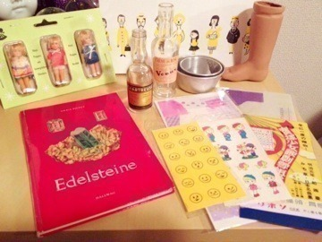
購入品。
ドールの脚どうしようか迷ってる。
雑貨だいすきな私にとっては
夢の国のようでした
ダークチェリーチョコレート
チーズケーキなんちゃらっていう
おしゃれなスイーツ食べました。
ほそぶちのめ が ね
寒い季節になると
もさいねって言われる。
大きくて分厚いニット
着てるからかな。
明日は収録。
来週は歌収録たくさんで忙しいけど
頑張ります！
まりか
2013/1108Fri今、うしろに蛇。515 回目
月の大きさMV公開されました！
魔剣士まいやん率いる悪の軍団。
まいまい、みさ、川後、まりか
4人のくノ一。
名付けてくのいちーず！！
前髪の分け目がみーんな一緒だ！！
中でも私は手裏剣を
武器にしていました。
あの手裏剣は本物だそうです。
ひゃー！
コメントでは
くノ一は意外だった
町娘っぽいと書かれていましたが、
改めて、どうでしょう。
(くノ一似合うねって言ってほしい)
やっぱり着ると魔法のように
忍者を気取ってしまいます。
撮影では動きが
無駄に機敏になっていました。
しゅたっしゅたたたたっ
スタッ
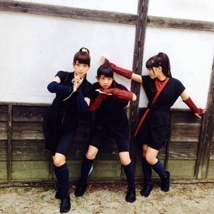
という感じ。
楽しかった〜
撮影中、雨が降ってしまったけど
完成されたのを見たら
冒頭の雨がいい感じ...！
みんなかっこいいしかわいいし
素敵なミュージックビデオです！
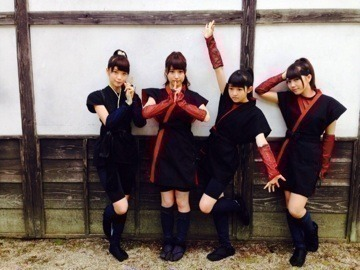
↑一人はしゃぎすぎ
ブログのタイトルが曲の
タイトルに関係してるといま知った
▶︎バレッタと月の大きさは
公開されたけどヒントが
あったのわかったよね？
他のも公開されてから
タイトルをチェックしてみてね。
あー！これか！っていうのが
ある、かも、
先週の乃木どこ見たよーー
まりかは楽屋では何してるん⁇
まりかは楽屋では何してるん⁇
▶︎実はあの時体調不良でした。
撮られてるとも知らず
ソファで寝てたり
いつもより静かで...
あー元気な時に撮ってほしかったなー
みなさんにも楽屋での
元気な姿を見て欲しかった。
あ、クロワッサンは食べたよ
ちゃっかり
間違えた写真はなにしてるの？
▶︎美彩の目元をらりんと見てるの！
メイクの研究です！
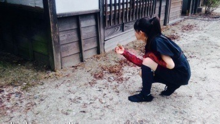
お！
苔がついた石だ！わーい！
まりか
2013/1107Thu伝説の幽霊部員。514 回目
おはようございます。
月の大きさのダンスかっこいい！
踊っていて楽しいよー
きのう、さば焼いて食べました。
現場でお弁当が出る時は
だいたい肉か魚の2種類なのですが、
最近は魚ばかり食べてます。
健康的だなーって思いながら食べる。
でも焼き肉！
焼き肉、焼き肉。
脂っこいものをがっつり食べたいいい
ラーメン！ラーメン！
みさ先輩いいいいい！！←
歌唱衣装。
襟が大きくてすき。
この写真は
MUSIC FAIRのときです。
7thのミュージックビデオがどれも素敵。
撮影楽しかったから
楽しんでるの伝わるー
すきなのだらけ
早く見てほしいな。
最近の趣味は
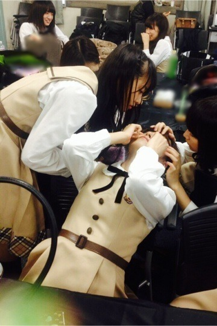
あ、写真間違えた笑
部屋でくつろぐことです！
でも平日は学校があったりで
一日中部屋でのんびりしてない！
この前部屋の模様替えしました。
私のベッドはロフトベッドなのですが
その下に置いてたソファを机と
かえてみたりね。
机の上に置いてたペンやがらくたを
他の棚に綺麗に並べてみたりね、
広くなった気がする。
すっきりしている...！
綺麗な部屋...！
ちっちゃいソファで
漫画を読むって最高ですね！！
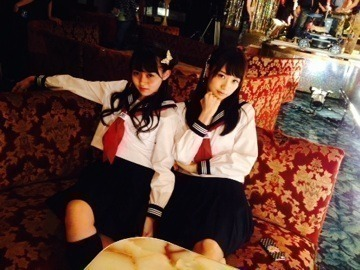
いやいや...
このソファもなかなか...！
どや
まりか
2013/1103Sun愛し合ってるかい？ 513回目
東北楽天ゴールデンイーグルス
日本一！！
初優勝の瞬間を見てました！
おめでとうございます！！
AGESTOCK2013 in早稲田
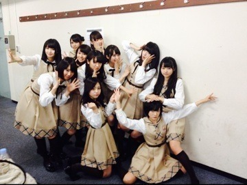
トークショー組！
学祭の様子をちらと見ましたが
とっても楽しそうでほっこりしたーー
キュンとする一言で
あの真夏さんと対決だった...
対決なのに真夏に
きゅんきゅんしちゃった。
会いたかったかもしれないを
踊ったのですが、
近すぎて恥ずかしかったです。
というか、ずっと緊張してました。
盛り上がってくれてありがとう！
元気をありがとう！
私たちも楽しませてもらいました。
焼きそばタピオカドリンク
フレンチトーストチュロス...
ああ美味しかった。
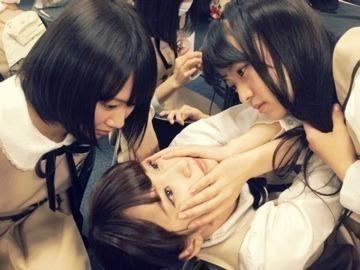
(美彩先輩のメイク綺麗だなー...)
今日はNHKロックの学園でした！
生徒のみなさん
ありがとうございました。
乃木坂46もロックを学びました。
最後にバレッタを初披露しました。
どうでしたか？
ダンスすごいすき。
バレッタ、聴けば聴くほど
すきになっていく。
最近ライブたくさんできて幸せ。
武道館楽しみです！
かなりんかなりんかなりんかなりん
うおおおおおおおおおおおお
かなりんんんん
かなりんんんんんんんん
きもいって言われてもすきだよおおお
まりか
2013/1101Fri心臓みたいな果実。 512回目
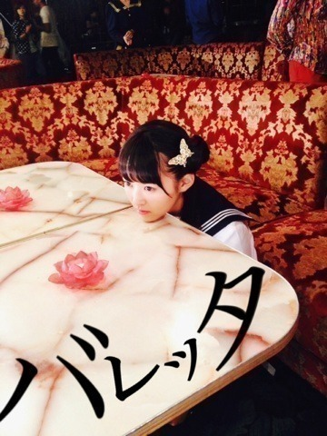
『バレッタ』MVが
YouTubeで公開されました！
MVは内容は恐ろしい話だけど、
作品としてすごい好きな世界観。
ナイフを思い出しました。
冒頭、誘拐されて
剥製になってしまう女子高生を
演じました。
こうやってチャンスを
いただいて嬉しかったですが
表題曲のMVであることに
プレッシャーを感じました。
可哀想って思ってもらえたら、
それがいちばんです。
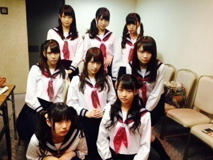
バック8の剥製、マネキン？
になった時の表情見てほしい！
銃撃戦があったりと衝撃的だったけど
また乃木坂46の
新しい一面が見れたのではないかな。
というか、新しい一面を
どんどん見せていきたい！
ということで
カップリングMVもお楽しみに♪
ダンスシーン、
みんな蝶のバレッタ付けてるけど
全部違うんだよー
明日は早稲田祭！
早稲田を乃木坂46がジャックするぞ
トークショーとか緊張するなー
どうしようーーー
そして、明後日はNHKロックの学園。
イベントいっぱいで嬉しいなっ
一緒に盛り上がりましょう！
まりか